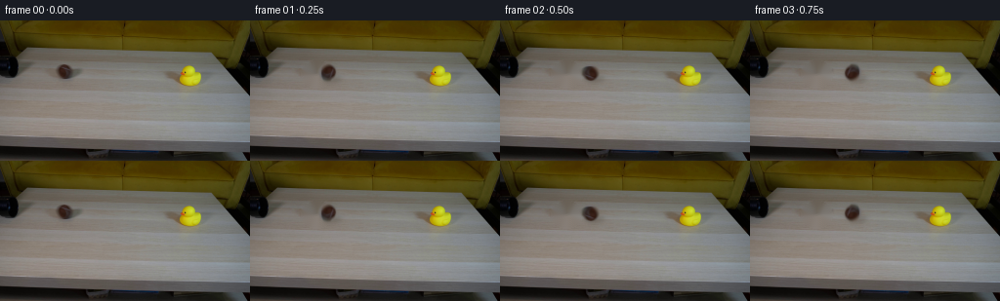
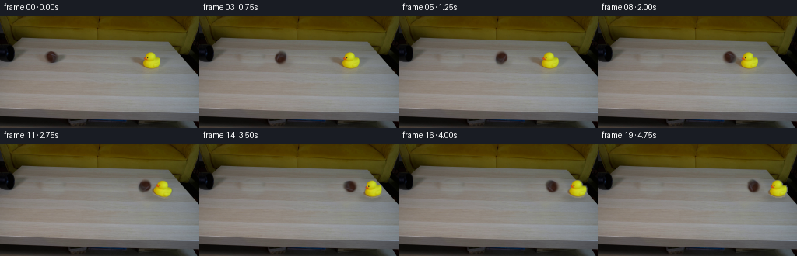
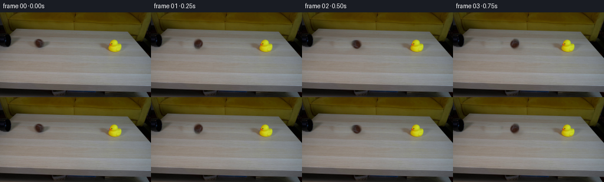
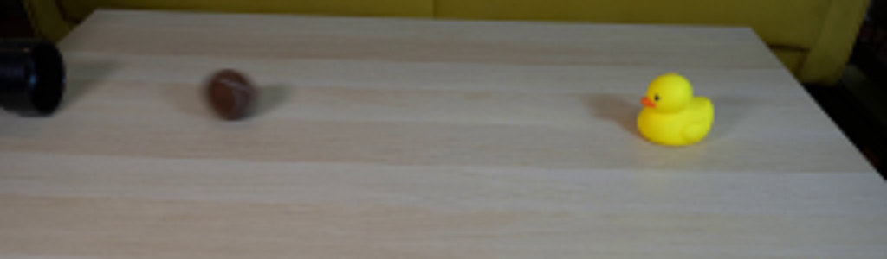
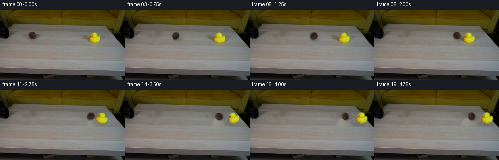
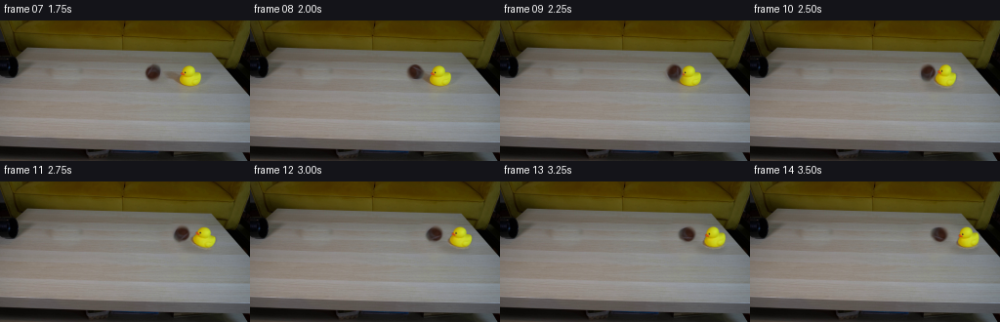

CODING AGENTS AS PIXEL WORLD MODELS
traex/GPT-5.6-Sol · 0008
点击播放 · 原生 RGB 像素
逐轮保存的候选
回放视频、检查图与代码变化。
每份候选均可单独播放。实际图片检查记录在下方工具轨迹中。
候选 01播放与检查图
点击播放 · 原生 RGB 像素


展开代码变化
--- 上一保存版本
+++ 本次保存版本
@@ -0,0 +1,177 @@
+from pathlib import Path
+
+import cv2
+import numpy as np
+from PIL import Image
+
+import artifact_io
+
+
+ROOT = Path(__file__).resolve().parent
+
+
+def feathered_object_mask(image, x0, y0, x1, y1):
+ """Segment the saturated yellow/orange duck while retaining its eye."""
+ crop = image[y0:y1, x0:x1]
+ b, g, r = cv2.split(crop[:, :, ::-1])
+ colored = ((r > 105) & (g > 45) & (b < 120) &
+ (r.astype(np.int16) - b.astype(np.int16) > 45)).astype(np.uint8)
+ colored = cv2.morphologyEx(colored, cv2.MORPH_CLOSE, np.ones((3, 3), np.uint8))
+ contours, _ = cv2.findContours(colored, cv2.RETR_EXTERNAL, cv2.CHAIN_APPROX_SIMPLE)
+ solid = np.zeros_like(colored)
+ if contours:
+ contour = max(contours, key=cv2.contourArea)
+ cv2.drawContours(solid, [contour], -1, 255, thickness=cv2.FILLED)
+ # The orange bill is small and can be disconnected by one dim antialiased pixel.
+ cv2.drawContours(solid, contours, -1, 255, thickness=cv2.FILLED)
+ # A narrow soft edge retains the photographic antialiasing without carrying table pixels.
+ expanded = cv2.dilate(solid, np.ones((2, 2), np.uint8), iterations=1)
+ return cv2.GaussianBlur(expanded, (3, 3), 0.55)
+
+
+def alpha_over(canvas, rgb, alpha, left, top):
+ """Alpha composite a small RGB sprite, allowing fractional/subpixel placement."""
+ # Fractional translation is applied to the sprite rather than snapping its motion.
+ ix, iy = int(np.floor(left)), int(np.floor(top))
+ fx, fy = float(left - ix), float(top - iy)
+ matrix = np.float32([[1, 0, fx], [0, 1, fy]])
+ h, w = alpha.shape
+ moved_rgb = cv2.warpAffine(rgb, matrix, (w + 2, h + 2), flags=cv2.INTER_LINEAR,
+ borderMode=cv2.BORDER_CONSTANT, borderValue=(0, 0, 0))
+ moved_a = cv2.warpAffine(alpha, matrix, (w + 2, h + 2), flags=cv2.INTER_LINEAR,
+ borderMode=cv2.BORDER_CONSTANT, borderValue=0)
+ H, W = canvas.shape[:2]
+ sx0, sy0 = max(0, -ix), max(0, -iy)
+ sx1, sy1 = min(w + 2, W - ix), min(h + 2, H - iy)
+ if sx1 <= sx0 or sy1 <= sy0:
+ return
+ dest = canvas[iy + sy0:iy + sy1, ix + sx0:ix + sx1].astype(np.float32)
+ src = moved_rgb[sy0:sy1, sx0:sx1].astype(np.float32)
+ a = moved_a[sy0:sy1, sx0:sx1, None].astype(np.float32) / 255.0
+ canvas[iy + sy0:iy + sy1, ix + sx0:ix + sx1] = np.clip(
+ src * a + dest * (1.0 - a), 0, 255).astype(np.uint8)
+
+
+def draw_soft_shadow(frame, center, axes, opacity, angle=0.0):
+ """Draw a diffuse contact shadow in a small temporary layer."""
+ h, w = frame.shape[:2]
+ matte = np.zeros((h, w), np.uint8)
+ cv2.ellipse(matte, (int(round(center[0])), int(round(center[1]))), axes,
+ angle, 0, 360, int(opacity), -1, cv2.LINE_AA)
+ matte = cv2.GaussianBlur(matte, (0, 0), 2.2)
+ a = matte[:, :, None].astype(np.float32) / 255.0
+ # Real table shadows are warm rather than neutral black.
+ shadow_color = np.array([54.0, 45.0, 31.0], np.float32)
+ frame[:] = np.clip(frame.astype(np.float32) * (1.0 - a) + shadow_color * a,
+ 0, 255).astype(np.uint8)
+
+
+def transform_rgba(rgb, alpha, pivot, angle, sx=1.0, sy=1.0):
+ """Rotate and elastically scale a sprite around a specified contact pivot."""
+ theta = np.deg2rad(angle)
+ c, s = np.cos(theta), np.sin(theta)
+ # In image coordinates this matrix produces the intended visible rocking direction.
+ linear = np.array([[c * sx, s * sy], [-s * sx, c * sy]], np.float32)
+ p = np.array(pivot, np.float32)
+ offset = p - linear @ p
+ matrix = np.concatenate([linear, offset[:, None]], axis=1)
+ h, w = alpha.shape
+ out_rgb = cv2.warpAffine(rgb, matrix, (w, h), flags=cv2.INTER_CUBIC,
+ borderMode=cv2.BORDER_CONSTANT, borderValue=(0, 0, 0))
+ out_a = cv2.warpAffine(alpha, matrix, (w, h), flags=cv2.INTER_LINEAR,
+ borderMode=cv2.BORDER_CONSTANT, borderValue=0)
+ return out_rgb, out_a
+
+
+def make_ball_sprite(source):
+ # The source ball is intentionally retained: its fuzzy nap, highlight and curved seam
+ # make each rotated view much more convincing than a newly drawn circle.
+ x0, y0, x1, y1 = 54, 41, 79, 66
+ rgb = source[y0:y1, x0:x1].copy()
+ yy, xx = np.mgrid[0:y1-y0, 0:x1-x0]
+ cx, cy = 12.2, 12.1
+ radius = np.sqrt(((xx - cx) / 9.3) ** 2 + ((yy - cy) / 9.3) ** 2)
+ alpha = np.clip((1.08 - radius) / 0.22, 0.0, 1.0)
+ alpha = cv2.GaussianBlur((alpha * 255).astype(np.uint8), (3, 3), 0.45)
+ return rgb, alpha, (cx, cy), (x0, y0)
+
+
+def clean_background(source, include_duck):
+ """Inpaint only occluded table regions, leaving the pipe and set untouched."""
+ mask = np.zeros(source.shape[:2], np.uint8)
+ cv2.ellipse(mask, (68, 55), (16, 14), 0, 0, 360, 255, -1)
+ if include_duck:
+ # Includes the long, soft leftward duck shadow as well as its silhouette.
+ polygon = np.array([[170, 51], [181, 41], [204, 42], [214, 55],
+ [213, 72], [177, 74], [168, 64]], np.int32)
+ cv2.fillPoly(mask, [polygon], 255)
+ # TELEA follows the table's existing low-contrast grain particularly well here.
+ return cv2.inpaint(source[:, :, ::-1], mask, 3.0, cv2.INPAINT_TELEA)[:, :, ::-1]
+
+
+def main():
+ source = np.asarray(Image.open(ROOT / "first_frame.png").convert("RGB"), dtype=np.uint8)
+ assert source.shape == (144, 256, 3)
+
+ ball_rgb, ball_alpha, ball_center_local, ball_origin = make_ball_sprite(source)
+
+ dx0, dy0, dx1, dy1 = 174, 38, 216, 78
+ duck_rgb = source[dy0:dy1, dx0:dx1].copy()
+ duck_alpha = feathered_object_mask(source, dx0, dy0, dx1, dy1)
+ duck_pivot = (195.0 - dx0, 68.0 - dy0)
+
+ plate_ball = clean_background(source, include_duck=False)
+ plate_all = clean_background(source, include_duck=True)
+
+ # Positions are sampled at the requested constant 4 fps. The abrupt velocity transfer
+ # at frames 9-10 makes the impact legible while subsequent damping makes the result physical.
+ ball_x = [66.2, 79, 92, 105, 118, 131, 144, 157, 169, 177.5,
+ 181, 185, 188, 191, 193.5, 195.5, 197, 198.2, 199.2, 200]
+ duck_x = [195] * 10 + [199, 207, 215, 221, 225, 228, 230, 231, 231.5, 232]
+ duck_angle = [0] * 10 + [-9, -14, -6, 5, 7, 1, -3, -2, 0.8, 0]
+ duck_scale = [(1.0, 1.0)] * 10 + [(.94, 1.055), (1.035, .98),
+ (1.015, .99), (.99, 1.01), (.995, 1.005),
+ (1, 1), (1, 1), (1, 1), (1, 1), (1, 1)]
+
+ frames = [source.copy()]
+ previous_x = ball_x[0]
+ accumulated_rotation = 0.0
+ for i in range(1, 20):
+ moving_duck = i >= 10
+ frame = (plate_all if moving_duck else plate_ball).copy()
+
+ # Shadows move with their objects and remain attached to the tabletop.
+ draw_soft_shadow(frame, (ball_x[i] + 5.0, 59.5), (9, 3), 56, -5)
+ if moving_duck:
+ draw_soft_shadow(frame, (duck_x[i] - 6.0, 68.0), (15, 4), 52, 2)
+
+ # A no-slip sphere rotates by distance/radius. Slow post-impact travel naturally
+ # produces much less rotation than its fast approach.
+ accumulated_rotation -= (ball_x[i] - previous_x) / 8.1 * 180.0 / np.pi
+ previous_x = ball_x[i]
+ rot_matrix = cv2.getRotationMatrix2D(ball_center_local, accumulated_rotation, 1.0)
+ bh, bw = ball_alpha.shape
+ rotated_ball = cv2.warpAffine(ball_rgb, rot_matrix, (bw, bh), flags=cv2.INTER_CUBIC,
+ borderMode=cv2.BORDER_CONSTANT, borderValue=(0, 0, 0))
+ rotated_alpha = cv2.warpAffine(ball_alpha, rot_matrix, (bw, bh), flags=cv2.INTER_LINEAR,
+ borderMode=cv2.BORDER_CONSTANT, borderValue=0)
+ alpha_over(frame, rotated_ball, rotated_alpha,
+ ball_x[i] - ball_center_local[0], 53.0 - ball_center_local[1])
+
+ if moving_duck:
+ sx, sy = duck_scale[i]
+ drgb, da = transform_rgba(duck_rgb, duck_alpha, duck_pivot,
+ duck_angle[i], sx, sy)
+ alpha_over(frame, drgb, da,
+ duck_x[i] - duck_pivot[0], 68.0 - duck_pivot[1])
+
+ frames.append(frame)
+
+ frames = np.stack(frames).astype(np.uint8)
+ # Contract-critical: retain the supplied photograph bit-for-bit as frame zero.
+ frames[0] = source
+ artifact_io.save(frames, ROOT)
+
+
+if __name__ == "__main__":
+ main()
候选 02播放与检查图
点击播放 · 原生 RGB 像素


展开代码变化
--- 上一保存版本
+++ 本次保存版本
@@ -98,15 +98,34 @@
def clean_background(source, include_duck):
"""Inpaint only occluded table regions, leaving the pipe and set untouched."""
- mask = np.zeros(source.shape[:2], np.uint8)
- cv2.ellipse(mask, (68, 55), (16, 14), 0, 0, 360, 255, -1)
+ # Same-row texture transfer is preferable to generic inpainting for the long horizontal
+ # grain of this tabletop. Irregular feather masks prevent telltale rectangular patches.
+ result = source.astype(np.float32).copy()
+
+ def transfer(mask, shift):
+ donor = np.empty_like(source)
+ if shift > 0:
+ donor[:, :-shift] = source[:, shift:]
+ donor[:, -shift:] = source[:, -1:]
+ else:
+ amount = -shift
+ donor[:, amount:] = source[:, :-amount]
+ donor[:, :amount] = source[:, :1]
+ soft = cv2.GaussianBlur(mask, (0, 0), 2.0)[:, :, None].astype(np.float32) / 255.0
+ result[:] = result * (1.0 - soft) + donor.astype(np.float32) * soft
+
+ ball_mask = np.zeros(source.shape[:2], np.uint8)
+ cv2.ellipse(ball_mask, (68, 55), (15, 12), 0, 0, 360, 255, -1)
+ transfer(ball_mask, 53)
+
if include_duck:
- # Includes the long, soft leftward duck shadow as well as its silhouette.
- polygon = np.array([[170, 51], [181, 41], [204, 42], [214, 55],
- [213, 72], [177, 74], [168, 64]], np.int32)
- cv2.fillPoly(mask, [polygon], 255)
- # TELEA follows the table's existing low-contrast grain particularly well here.
- return cv2.inpaint(source[:, :, ::-1], mask, 3.0, cv2.INPAINT_TELEA)[:, :, ::-1]
+ duck_mask = np.zeros(source.shape[:2], np.uint8)
+ # Includes the broad, soft, leftward cast shadow as well as the silhouette.
+ polygon = np.array([[165, 53], [179, 39], [202, 39], [217, 52],
+ [218, 71], [178, 76], [164, 65]], np.int32)
+ cv2.fillPoly(duck_mask, [polygon], 255)
+ transfer(duck_mask, -55)
+ return np.clip(result, 0, 255).astype(np.uint8)
def main():
可观测工具轨迹
实际执行的命令与返回图片。
命令 1exit 0
/bin/bash -lc "cat GENERATION_RULES.md && printf '\\n--- PROMPT ---\\n' && cat prompt.txt"
命令 2exit 1
/bin/bash -lc "find . -maxdepth 2 -type f -printf '%p\\n' | sort && printf '\\n--- BINARIES ---\\n' && command -v ffmpeg && command -v python3"
命令 3exit 0
/bin/bash -lc 'cat artifact_io.py'
命令 4exit 127
/bin/bash -lc "python3 - <<'PY' mods=['PIL','numpy','cv2','scipy','imageio','skimage'] for m in mods: try: x=__import__(m); print(m,'OK',getattr(x,'__version__','')) except Exception as e: print(m,'NO',e) PY which ffmpeg || true file first_frame.png "
命令 5exit 0
/bin/bash -lc "python3 - <<'PY'
from PIL import Image
im=Image.open('first_frame.png')
im.crop((0,25,256,100)).resize((1024,300)).save('.tmp/objects_zoom.png')
PY"命令 6exit 0
/bin/bash -lc "python3 generate.py && python3 - <<'PY'
import numpy as np
from PIL import Image
p=np.load('pixels.npz')['pixels']
first=np.asarray(Image.open('first_frame.png')).astype(np.uint32)
packed=(first[:,:,0]<<16)|(first[:,:,1]<<8)|first[:,:,2]
print('pixels',p.shape,p.dtype,'first identical',np.array_equal(p[:,:,0],packed))
print('frame PNG identical',np.array_equal(np.asarray(Image.open('frames/00.png')), np.asarray(Image.open('first_frame.png'))))
PY"命令 7exit 0
/bin/bash -lc 'python3 generate.py'
命令 8exit 0
/bin/bash -lc "python3 - <<'PY'
from PIL import Image,ImageDraw
ims=[Image.open(f'frames/{i:02}.png') for i in range(7,15)]
out=Image.new('RGB',(256*4,165*2),(20,20,25));d=ImageDraw.Draw(out)
for j,(i,im) in enumerate(zip(range(7,15),ims)):
x=(j%4)*256;y=(j//4)*165
d.text((x+4,y+3),f'frame {i:02} {i/4:.2f}s',fill='white');out.paste(im,(x,y+21))
out.save('.tmp/impact.png')
PY"命令 9exit 0
/bin/bash -lc "set -e
python3 -m py_compile generate.py
python3 generate.py
python3 - <<'PY'
from pathlib import Path
import numpy as np
from PIL import Image
frames=[]
for i in range(20):
p=Path('frames')/f'{i:02d}.png'
assert p.is_file(), p
a=np.asarray(Image.open(p))
assert a.shape==(144,256,3), (i,a.shape)
assert a.dtype==np.uint8
frames.append(a)
frames=np.stack(frames)
first=np.asarray(Image.open('first_frame.png').convert('RGB'))
assert np.array_equal(frames[0],first)
assert frames.shape==(20,144,256,3) and frames.dtype==np.uint8
p=np.load('pixels.npz')['pixels']
assert p.shape==(144,256,20) and p.dtype==np.uint32
packed=(frames.astype(np.uint32)[...,0]<<16)|(frames.astype(np.uint32)[...,1]<<8)|frames.astype(np.uint32)[...,2]
assert np.array_equal(p,packed.transpose(1,2,0))
assert Path('index.html').is_file() and Path('inspection.png').is_file()
print('PASS: 20 RGB uint8 frames, 256x144, exact frame 00, packed artifact verified')
print('changed pixels by transition:', [int(np.count_nonzero(np.any(frames[i]"'!=frames[i-1],axis=2))) for i in range(1,20)])
PY
ls -lh generate.py pixels.npz index.html inspection.png frames/00.png frames/19.png'视觉工具实际返回图片 1

视觉工具实际返回图片 2

视觉工具实际返回图片 3

视觉工具实际返回图片 4

视觉工具实际返回图片 5

视觉工具实际返回图片 6

保存候选 2 份；完成命令 9 次；可验证图片返回 6 张。原始 API 响应与完整日志保留在本地。